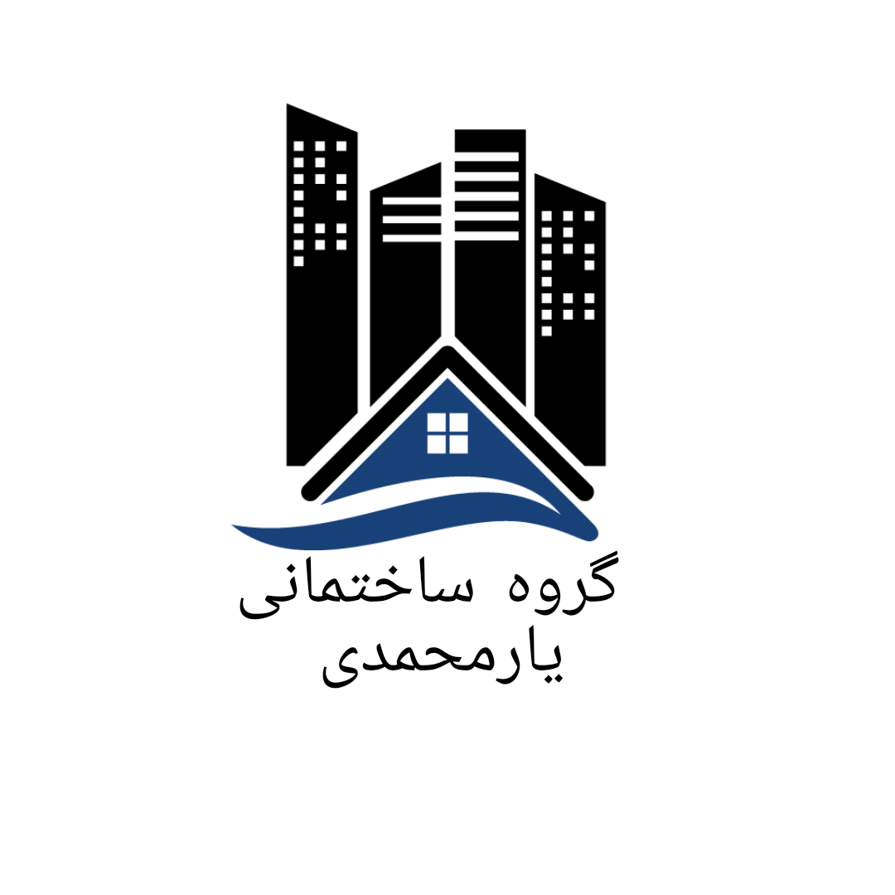

گروه ساختمانی یارمحمدی
گروه ساختمانی یارمحمدی با بیش از 17 سال سابقه حرفهای در تهران آماده ارائه خدمات با کیفیت بالا میباشد. اجرای کارهای مدرن شامل اسلب، کاشی و سرامیک کاری، بین کابینت، کارهای زیرسازی و بازسازی مانند سیمانکاری و کندهکاری، عایق کاری آب (ایزوگام و قیرگونی)، لولهکشی، نصب و وصل شیرآلات و روشویی، جوشکاری داخلی و نصب در اتاقها و سرویسها. تیمی از افراد با سابقه کاری طولانی و تجربه عملی، خدماتی با استاندارد بالا ارائه میکنند.
Yarmohammadi Construction Group
Yarmohammadi Construction Group, with over 17 years of professional experience in Tehran, provides high-quality services. Modern execution including slab work, tiling, ceramics, kitchen cabinet installation, structural and renovation works like cementing and demolition, waterproofing (Isogam and Qirquni), plumbing, installing faucets and sinks, internal welding, and room & service installations. A team of highly experienced professionals ensures top-standard results for every project.
نمونهکارهای ما